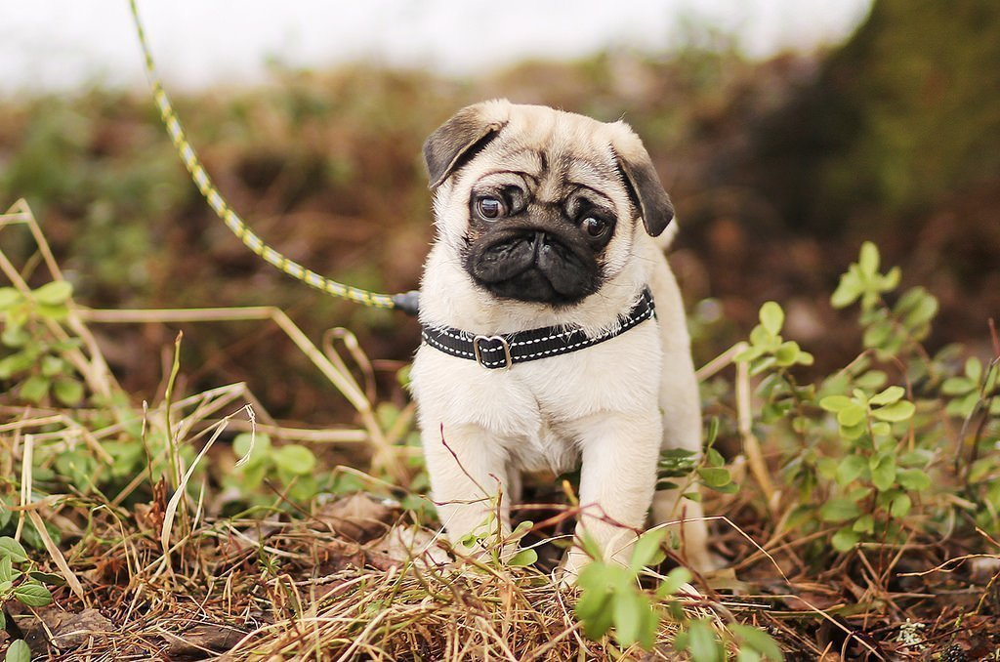
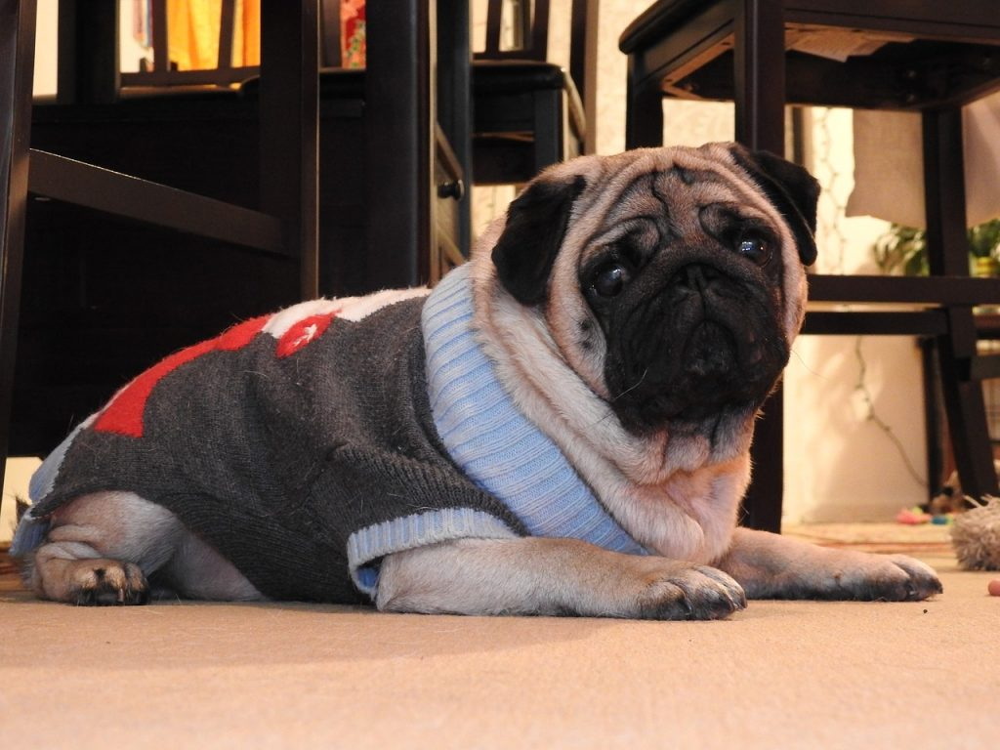
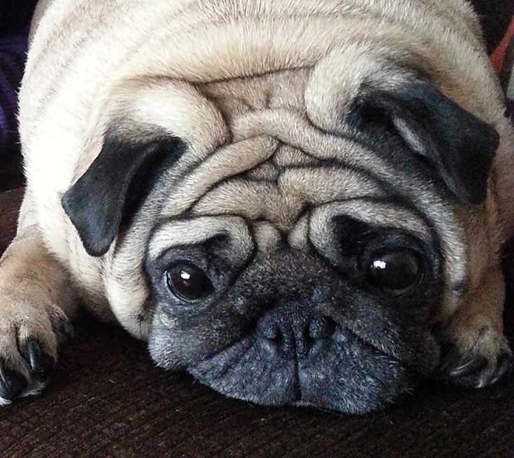

мопсы - очень милая собак с не большим количеством шерсти. здесь будет инфармация про собак
Мопс– маленькая декоративная порода, собака – компаньон. Считается одной из самых древних пород в мире. Они активны и жизнерадостны, любят внимание и ласку. Их происхождение уходит своими корнями во времена ранней китайской династии. Этих общительных малышей разводили специально для императоров. В те далекие времена они являлись стражами храмов и были крупнее в размере. На первый взгляд мопсы кажутся ленивыми и медлительными животными, которые могут дни напролет лежать на диване. Но владельцы собачек легко опровергнут сказанное, ведь представители этой породы – настоящие личности, активные и жизнерадостные, слегка упрямые и своенравные, но безгранично преданные своим хозяевам. Такой питомец сразу станет любимцем всех членов семьи, но потребует заботы о здоровье и правильного ухода. Порода считается одной из самых старых в мире, и берет свое начало на Востоке – согласно разным источникам, она берет начало в Китае или в Индии. В записях Конфуция есть информация о маленьких собаках, которые жили исключительно в домах богатых граждан. В Европу мопсов завезли в XV-XVI веке, причем жители Старого Света были более демократичны, и держать милую маленькую собачку, которую называли «китайским мастифом», разрешалось всем. Единственная проблема заключалась в деньгах – щенок стоил очень дорого, поэтому позволить себе покупку могли только купцы или аристократы. Особую популярность породистые мопсики приобрели после того, как четвероногий любимец спас короля Голландии Вильгельма Тишайшего. Против монарха готовился заговор, и печальной участи ему удалось избежать только благодаря песику, который разбудил высокопоставленного хозяина в нужный момент. Исследователи сходятся во мнении, что возраст породы насчитывает не менее 3 тысяч лет. Их предками называют пекинесов, которые, в свою очередь, произошли от пород под названием лхаса-апсо и чемдзе-апсо, которые охраняли тибетские монастыри. Согласно этой теории, мопсы появились в результате генетических мутаций или скрещивания длинношерстных собак с представителями других пород. У подобной версии происхождения псов есть сторонники и противники, которые утверждают, что короткошерстные животные появились раньше пекинесов, а не наоборот. Источник: https://mops-sobaka.ru